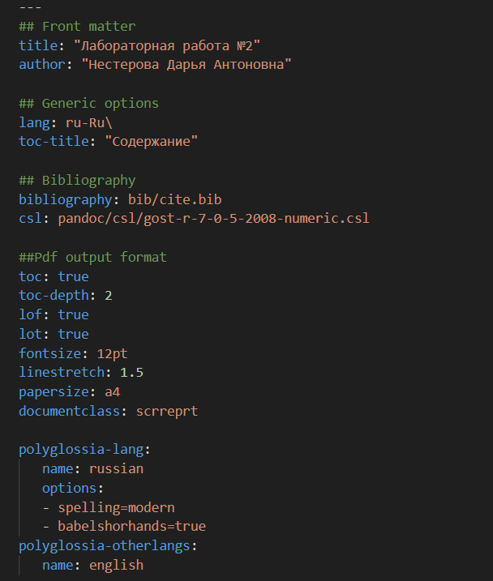
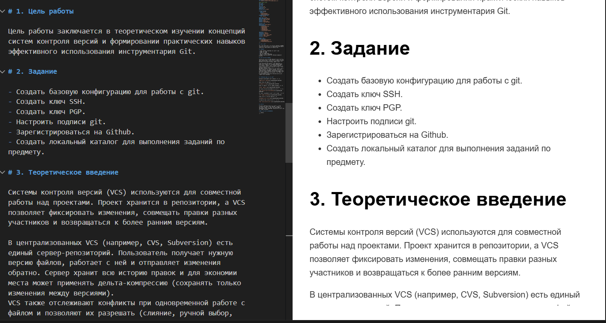
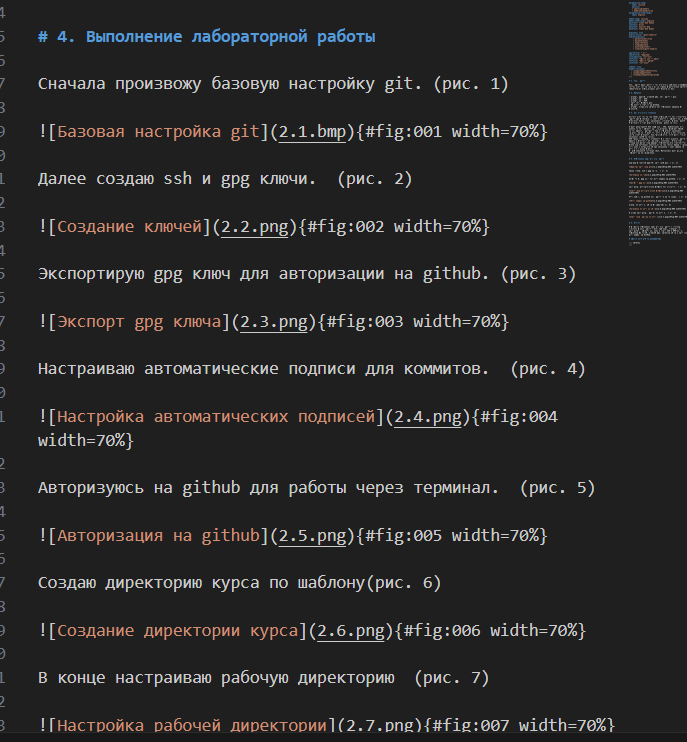
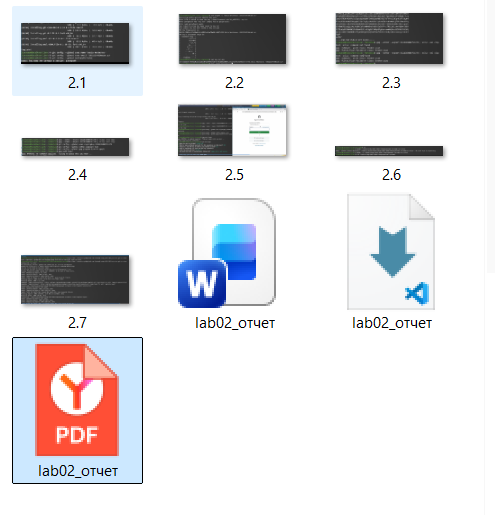

Приобретение навыков подготовки отчетов с использованием языка разметки Markdown.
Чтобы создать заголовок, используйте знак ( # ). Чтобы задать для текста полужирное начертание, заключите его в двойные звездочки, а для курсивного — в одинарные. Полужирное и курсивное начертание одновременно задается тройными звездочками. Блоки цитирования создаются с помощью символа >. Неупорядоченный (маркированный) список можно отформатировать с помощью звездочек или тире, а упорядоченный — с помощью соответствующих цифр. Чтобы вложить один список в другой, добавьте отступ для элементов дочернего списка. Синтаксис Markdown для встроенной ссылки состоит из части [link text], представляющей текст гиперссылки, и части (file-name.md) — URL-адреса или имени файла, на который дается ссылка. Markdown поддерживает как встраивание фрагментов кода в предложение, так и их размещение между предложениями в виде отдельных огражденных блоков. Внутритекстовые формулы делаются аналогично формулам LaTeX. Для обработки файлов в формате Markdown используется Pandoc.
Указываю основную информацию о лабораторной работе, прописываю необходимый код.

Формирую цель работы, задание и заполняю теоретическое введение.

Описываю процесс выполнения лабораторной работы.

Конвертирую файл в нужные форматы и проверяю корректность конвертации.

В результате выполнения лабораторной работы были освоены принципы оформления отчетов с импользованием языка разметки Markdown.